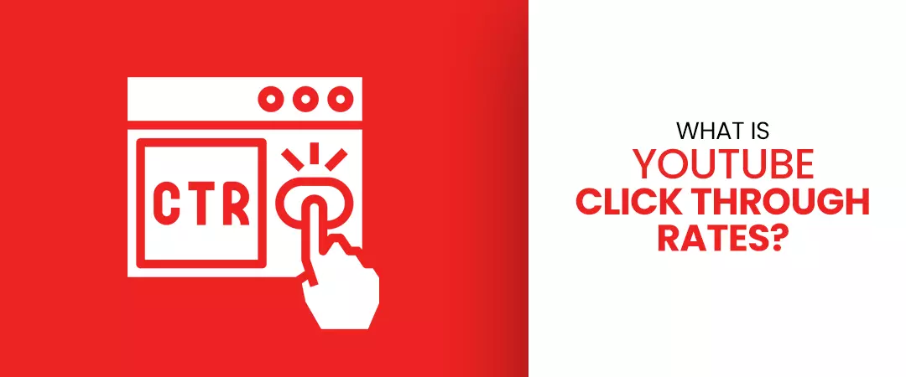
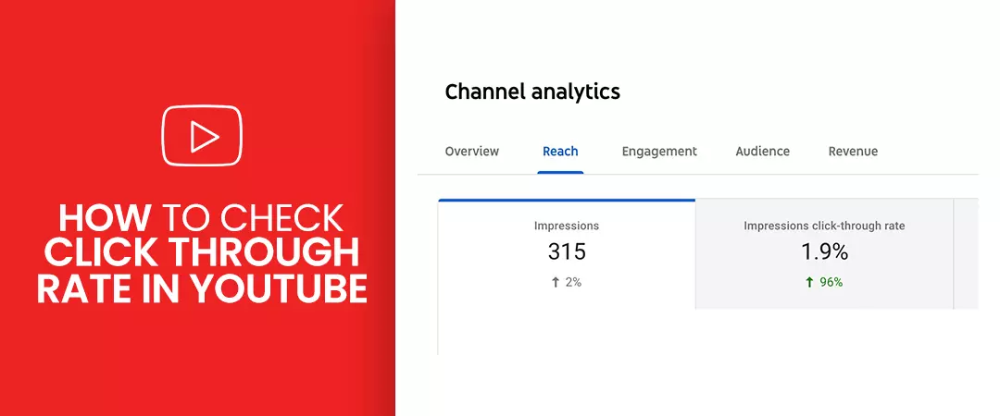

What is YouTube Click Through Rate

Click Through Rates are a component of determining how fine content is performing. Click Through Rate is a broad marketing term and not exclusively used in the context of YouTube.It is affected by relevancy, viewability, visibility and effectiveness of title and thumbnail.
If your CTR is low, Youtube will not suggest your videos to people.On the other hand, if it’s high,the algorithm will give it more organic reach.
What is a good click through rate?
A CTR between 2% and 10% is considered normal according to YouTube Creator Academy:
-
10% is high, which means a lot of people click on it
-
2% is low, which tells less people click on it
-
4-5% is considered good
This parameter is often highest when you upload a new video, as fans/subscribers dive in to check out your creation. With time you will witness a decrease in your CTR. But if your video has a broader audience and has become popular than you need not to worry.
How to check CTR in Youtube?

There are two types of YouTube Click Through Rates:
-
Average CTRs for all your videos united
-
Log in to YouTube
-
Go to YT Studio
-
select “analytics” in the left navigation
-
Go to tab: Reach
-
Check out your YouTube CTR!
-
CTRs of a specific video
-
Log in to YouTube
-
Go to YT Studio
-
Head to menu item: Videos
-
Select a video for which you want to see the CTR and click on the Analytics icon
-
Go to tab: Reach
-
See Youtube CTR & Impressions here.
How is YouTube Click Through Rate calculated?
The formula for calculating Click Through Rate: CTR % = (Amount of clicks / Number of Total impressions) * 100
Clicks = how many viewers click on the title+thumbnail Impressions = how many viewers have seen the thumbnail.
If 100 people see your thumbnail and 9 click on it, you have a Click Through Rate of 9%.
If 15,256 viewers see your title+thumbnail and 626 click on it, you have a Click Through Rate of 4.1% (=626 / 15,256 * 100).
How do I increase my click through rate?
Formulate eye-catchy thumbnails
Custom thumbnails are the most powerful way to get high click through rates by drawing viewers’ attention to the title. With 90% of the top-performing videos on YT using custom thumbnails, you need to acknowledge, how to design them because the automated default thumbnail YouTube provides can only harmyour CTR.
Alistair Dodds of Ever-Increasing Circles agrees, “Take the time to create an eye-catching thumbnail. Don’t just go with the default frame YT selects. Instead, work with your graphics team to come up with a template that allows you to insert an attention-grabbing image and/or text.”
YouTube provides a chaperon for thumbnails that will get clicks. The Creator Academy suggests including a human, some text, and an expressive countenance, to create a thumbnail that viewers will love.
Nikola Roza- SEO for the Poor and Determined says, “Video thumbnails are crucial to optimize simply because they’re the largest element of your result in search and related videos sidebar.
YT is a profoundly visual medium; by selecting the most appealing screenshot for your thumbnail, as divergent to boring images like a blank background or an unpretentious shot of an individual’s face, you will instantly drive target audience and boost YouTube CTR & views.
Pro tips
-
Keep them simple
-
Go for striking visual impact, not details
-
Differentiate with bright colours
-
Include only 2-4 words to your thumbnail
-
Feature your logo
-
Prefer unique and instantly recognizable thumbnail style.
Include subscriber CTAs to develop a loyal brand following
“Test different CTAs (call to actions),” says Nick Yee of Portent. “Although you are limited to 10 characters for a call-to-action, you should always try out a different call to actions like Buy Now, Shop Now, or Learn More.”
Persuade different call to actions to visit your channel and to subscribe to it.This can make leads engaged when they aren’t prepared to make an acquisition. This results in a long-term higher click through rate.
To increase CTR and rank your video withalgorithm, you need a loyal following. Your channel must have a pure niche and target audience is how you set one. By sticking to your niche, you’ll get smaller number of views to start but they’ll be more focused, helping you achieve a better CTR and higher rankings in YT search pages. You’ll also figure the foundation on which your channel can grow.
“Build a loyal brand following,” says Brack Nelson of Incrementors Web Solutions. “A large subscriber base indicates you will be able to increase views. Videos become famous among others as well, and more comments and views will follow. Including a call to action to visit your site and to contribute to your channel can keep leads involved when they aren’t quite ready to make a purchase. This results in a long-term higher CTR.”
Use Tools to Research Video Titles
Represent your titles in a way that viewers will want to click on them, you need to research the phrases your target audience is already using to search for content corresponding to yours. Add relevant keywords in your title by conducting a comprehensive YouTube keyword research,to rank high in SERPs. Youtubers can buy subscribers to increase their rankings with algorithm.
Make sure to keep it short, intriguing and accurate. The more relevant it is, the more clicks per impression or CTR your video will get. You can use TubeBuddy and VidIQ free toolsto track search terms.
Increase average watch time
“Increasing watch time increases the odds of getting featured in the recommendation section which has the potential to increase click-through-rate,” says Samuel David of Attrat.
Make longer videos, hook your audience with a surprise element to be disclosed at last, create compelling thumbnails, titles, and descriptions (spy your competitors). Do comprehensive keyword research, recommend your other videos using cards and end screens, and be aware of how you make orientation of factors that could reason viewers to pause or take other actions. Play your cards well to increase your videos watch time and click through rate.
Do not take description lightly!
YT allows you to add a description for your video. In this space, you explain to your potential viewer, what your video is about, and what they should expect to gain after watching it, i.e., how are you planning to provide them with the value they are looking for. We recommend using your focus keywords very well through out the description in a relevant manner.
The video description thus allows viewers to decide whether or not they should invest their time in your video. If you manage to convince them in the first 2 lines that your video is worth their time, then congratulations, you just learned yet another way to boost the click through rate on your channel!
Make the best of YouTube Cards
YouTube cards are an interactive feature that allows creators to maintain maximum retention of a viewer or to guide them towards a video that they would like to watch in order to understand a certain segment better in the ongoing video. Viewers can access these cards by simply clicking on the “i” that appears on the top right corner of the video. Thus, Cards are a great and rather easy way to increase the CTR on your channel. Moreover, you can even point your viewers towards a video, a link, a playlist, or even a channel. However, you cannot use cards in a video set as ‘made for kids’.
I hope you understood how to increase YouTube click through rate to increase rankings, viewership, subscribers, watch hours, and engagements to grow your channel!
Feel free to share!